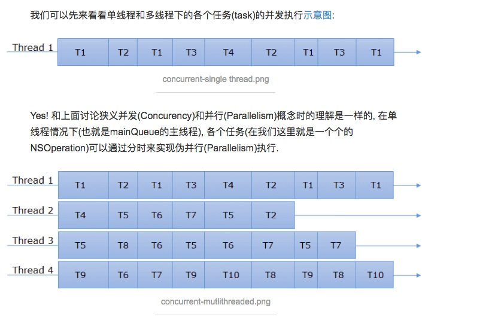
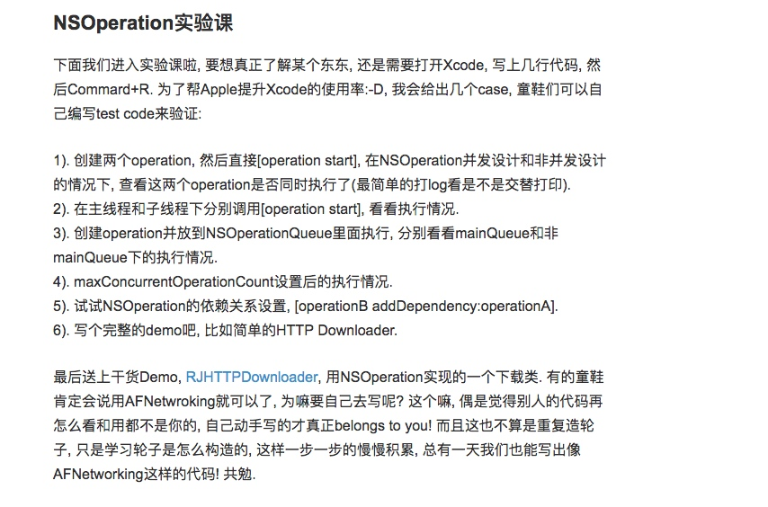

与GCD相比好处:
1. NSOperation是基于GCD之上的更高一层封装, 拥有更多的API(e.g. suspend, resume, cancel等等).
2. 在NSOperationQueue中, 可以指定各个NSOperation之间的依赖关系
3. 用KVO可以方便的监测NSOperation的状态(isExecuted, isFinished, isCancelled).
4. 更高的可定制能力, 你可以继承NSOperation实现可复用的逻辑模块.
NSOperation和NSOperationQueue
NSOpration是苹果公司对GCD的封装，NSOperation和MSOprationQueue分别对应GCD中的任务和队列
因此操作步骤如下：
1. 将要执行的任务封装到NSOperation对象中
2. 将任务添加到一个NSOprationQueue对象中
添加任务
NSOperation是一个抽象类，所以不能封装任务。但他有两个子类可以封装任务。分别为：NSInvocationOperation和NSBlockOperation。创建之后需要start启动，默认在当前队列同步执行当然也可以用cancle在中途取消任务
在不使用NSOperationQueue，单独使用NSOperation的情况下系统同步执行操作:
//1.创建NSInvocationOperation对象
NSInvocationOperation *operation = [[NSInvocationOperation alloc] initWithTarget:self selector:@selector(run) object:nil];
//2.开始执行
[operation start];
/**[]()
在没有使用NSOperationQueue、单独使用NSInvocationOperation的情况下，
NSInvocationOperation在主线程执行操作，并没有开启新线程。
*/
在swift中这种方法是不是类型安全的（推荐第二种）
//1.创建NSBlockOperation对象
NSBlockOperation *operation = [NSBlockOperation blockOperationWithBlock:^{
NSLog(@"%@", [NSThread currentThread]);
}];
//2.开始任务
[operation start];
默认会在当前线程中执行。但是NSBlockOperation还有一个方法addExecutionBlock:，通过这个方法会给Operation添加多个执行Block。这样的话Operation中的任务会并发执行，他会在主线程和其他多个线程执行这些任务
```Object-c
//1.创建NSBlockOperation对象
NSBlockOperation *operation = [NSBlockOperation blockOperationWithBlock:{
NSLog(@"%@", [NSThread currentThread]);
}];
//添加多个Block
for (NSInteger i = 0; i < 5; i++) {
[operation addExecutionBlock:^{
NSLog(@"第%ld次：%@", i, [NSThread currentThread]);
}];
}
//2.开始任务
[operation start];
/**
可以看出，blockOperationWithBlock:方法中的操作是在主线程中执行的，而
addExecutionBlock:方法中的操作是在其他线程中执行的。
*/
```
自定义Operation
除了上面的两种 Operation 以外，我们还可以自定义 Operation。自定义 Operation 需要继承 NSOperation 类，并实现其 main() 方法，因为在调用 start() 方法的时候，内部会调用 main() 方法完成相关逻辑。
在没有使用NSOperationQueue、单独使用自定义子类的情况下，是在主线程执行操作，并没有开启新线程。
注意:
NSOperation可以自己独立执行(直接调用[operation start]), 也可以放到NSOperationQueue里面执行, 这两种情况下是否并发执行是不同的.
1. non-concurrent
NSOperation默认是非并发的(non-concurrent),果你把operation放到某个线程执行, 它会一直block住该线程, 直到operation finished.
对于非并发的operation你只需要继承NSOperation, 然后重写main()方法即可
示例:下载一张:
/**
由于NSOperation是可以cancel的, 所以你需要在operation程序内部执行过程中判断当前
operation是否已经被cancel了(isCancelled). 如果已经被cancel那就不往下执行了. 当你在外面
调用[operation cancel]后, isCancelled会被置为YES.
*/
@implementation YourOperation
- (void)main
{
@autoreleasepool {
if (self.isCancelled) return;
NSData *imageData = [[NSData alloc] initWithContentsOfURL:imageURL];
if (self.isCancelled) { imageData = nil; return; }
if (imageData) {
UIImage *downloadedImage = [UIImage imageWithData:imageData];
}
imageData = nil;
if (self.isCancelled) return;
[self.delegate performSelectorOnMainThread:@selector(imageDownloaderDidFinish:)
withObject:downloadedImage
waitUntilDone:NO];
}
}
@end
1. Concurrent
NSOperation有三个状态量isCancelled, isExecuting和isFinished. isCancelled上面解释过. main函数执行完成后, isExecuting会被置为NO, 而isFinished则被置为YES.
那肿么实现并发(concurrent)的NSOperation呢? 也很简单:
1). 重写isConcurrent函数, 返回YES, 这个告诉系统各单位注意了我这个operation是要并发的.
2). 重写start()函数.
3). 重写isExecuting和isFinished函数
4). 有必要时需要重写isCanceled函数
为什么在并发情况下需要自己来设定isExecuting和isFinished这两个状态量呢? 因为在并发情况下系统不知道operation什么时候finished, operation里面的task一般来说是异步执行的, 也就是start函数返回了operation不一定就是finish了, 这个你自己来控制, 你什么时候将isFinished置为YES(发送相应的KVO消息), operation就什么时候完成了.
- (BOOL)isConcurrent {
return YES;
}
- (void)start
{
[self willChangeValueForKey:@"isExecuting"];
_isExecuting = YES;
[self didChangeValueForKey:@"isExecuting"];
NSURLRequest * request = [NSURLRequest requestWithURL:imageURL];
_connection = [[NSURLConnection alloc] initWithRequest:request
delegate:self];
if (_connection == nil) [self finish];
}
- (void)finish
{
self.connection = nil;
[self willChangeValueForKey:@"isExecuting"];
[self willChangeValueForKey:@"isFinished"];
_isExecuting = NO;
_isFinished = YES;
[self didChangeValueForKey:@"isExecuting"];
[self didChangeValueForKey:@"isFinished"];
}
#pragma mark - NSURLConnection delegate
- (void)connection:(NSURLConnection *)connection didReceiveResponse:(NSURLResponse *)response {
// to do something...
}
- (void)connection:(NSURLConnection *)connection didReceiveData:(NSData *)data {
// to do something...
}
- (void)connectionDidFinishLoading:(NSURLConnection *)connection {
[self finish];
}
- (void)connection:(NSURLConnection *)connection didFailWithError:(NSError *)error {
[self finish];
}
@end
还有以下几点需要注意:
* operation的executing和finished状态量需要用willChangeValueForKey/didChangeValueForKey来触发KVO消息.
* 在调用完NSURLConnection之后start函数就返回了, 后面就坐等connection的回调了
* 在connection的didFinish或didFail回调里面设置operation的finish状态, 告诉系统operation执行完毕了.
注意:
如果你是在主线程调用的这个并发的operation, 那一切都是非常的perfect, 就算你当前在操作UI也不影响operation的下载操作. BUT, 如果你是在子线程调用的, 或者把operation加到了非main queue, 那么问题来了, 你会发现这货的NSURLConnection delegate不走了.
这是runLoop的原因，主线程会自动创建一个RunLoop来保证程序一直运行. 但子线程默认不创建NSRunLoop, 所以子线程的任务一旦返回, 线程就over了.上面的并发operation当start函数返回后子线程就退出了, 当NSURLConnection的delegate回调时, 线程已经木有了, 所以你也就收不到回调了. 为了保证子线程持续live(等待connection回调), 你需要在子线程中加入RunLoop, 来保证它不会被kill掉.
详细关于RunLoop的知识可以查看 并发编程Runloop
对于这个问题:我们解决办法
1. 让start函数在主线程运行(即使[operation start]是在子线程调用的).
```Object-c
- (void)start
{
if (![NSThread isMainThread]) {
[self performSelectorOnMainThread:@selector(start)
withObject:nil
waitUntilDone:NO];
return;
}
// set up NSURLConnection...
}
或者
- (void)start
{
[[NSOperationQueue mainQueue] addOperationWithBlock:^{
self.connection = [NSURLConnection connectionWithRequest:self.request delegate:self];
}];
}
```
方法二是:让
operation的start函数在子线程运行, 但是我们为它创建一个RunLoop. 然后把URL connection schedule到上面去. （这种方法不推荐）//参考AFNetWorking的做法 + (void)networkRequestThreadEntryPoint:(id)__unused object { @autoreleasepool { [[NSThread currentThread] setName:@"AFNetworking"]; NSRunLoop *runLoop = [NSRunLoop currentRunLoop]; [runLoop addPort:[NSMachPort port] forMode:NSDefaultRunLoopMode]; [runLoop run]; } } + (NSThread *)networkRequestThread { static NSThread *_networkRequestThread = nil; static dispatch_once_t oncePredicate; dispatch_once(&oncePredicate, ^{ _networkRequestThread = [[NSThread alloc] initWithTarget:self selector:@selector(networkRequestThreadEntryPoint:) object:nil]; [_networkRequestThread start]; }); return _networkRequestThread; } - (void)start { [self.lock lock]; if ([self isCancelled]) { [self performSelector:@selector(cancelConnection) onThread:[[self class] networkRequestThread] withObject:nil waitUntilDone:NO modes:[self.runLoopModes allObjects]]; } else if ([self isReady]) { self.state = AFOperationExecutingState; [self performSelector:@selector(operationDidStart) onThread:[[self class] networkRequestThread] withObject:nil waitUntilDone:NO modes:[self.runLoopModes allObjects]]; } [self.lock unlock]; }AFNetworking创建了一个新的子线程(在子线程中调用NSRunLoop *runloop = [NSRunLoop currentRunLoop]; 获取RunLoop对象的时候, 就会创建RunLoop), 然后把它加到RunLoop里面来保证它一直运行.
这边我们可以简单的判断下当前start()的线程是子线程还是主线程, 如果是子线程则调用[NSRunLoop currentRunLoop]创新RunLoop, 否则就直接调用[NSRunLoop mainRunLoop], 当然在主线程下就没必要调用[runLoop run]了, 因为它本来就是一直run的.
我们还可以使用CFRunLoop来启动和停止RunLoop
[self.connection scheduleInRunLoop:[NSRunLoop currentRunLoop]
forMode:NSRunLoopCommonModes];
CFRunLoopRun();
等到该Operation结束的时候, 一定要记得调用CFRunLoopStop()停止当前线程的RunLoop, 让当前线程在operation finished之后可以退出.
NSOperationQueue
看过上面的内容就知道，我们可以调用一个 NSOperation 对象的 start() 方法来启动这个任务，但是这样做他们默认是 同步执行 的。就算是 addExecutionBlock 方法，也会在 当前线程和其他线程 中执行，也就是说还是会占用当前线程。这是就要用到队列 NSOperationQueue 了。而且，按类型来说的话一共有两种类型：主队列、其他队列。只要添加到队列，会自动调用任务的 start() 方法
一旦NSOperation被add到Queue里面那么我们就不care它自身是不是并发设计的了, 因为被add到Queue里面的operation必定是并发的. 而且我们可以设置Queue的maxConcurrentOperationCount来指定最大的并发数(也就是几个operation可以同时被执行, 如果这个值设为1, 那这个Queue就是串行队列了).
Queue会为每一个add到队列里面的operation创建一个线程来运行其start函数, 这样每个start都分布在不同的线程里面来实现operation们的并发执行.
注意:
** 我们这边所说的并发都是指NSOperation之间的并发(多个operation同时执行), 如果maxConcurrentOperationCount设置为1或者把operation放到[NSOperationQueue mainQueue]里面执行, 那它们只会顺序(Serial)执行, 当然就不可能并发了.**
* 主队列
细心同学会发现，每套多线程方案都会有一个主线程。这是一个特殊的线程必须串行。凡是添加到主队列中的任务（NSOperation），都会放到主线程中执行
//OBJECTIVE-C
NSOperationQueue *queue = [NSOperationQueue mainQueue];
//SWIFT
let queue = NSOperationQueue.mainQueue()
* 其他队列
通过初始化产生的队列就是其他队列了，其他队列不需要名字
注意：其他队列会在其他线程中并行执行
```Object-c
//1.创建一个其他队列
NSOperationQueue *queue = [[NSOperationQueue alloc] init];
//2.创建NSBlockOperation对象
NSBlockOperation *operation = [NSBlockOperation blockOperationWithBlock:^{
NSLog(@"%@", [NSThread currentThread]);
}];
//3.添加多个Block
for (NSInteger i = 0; i < 5; i++) {
[operation addExecutionBlock:^{
NSLog(@"第%ld次：%@", i, [NSThread currentThread]);
}];
}
//4.队列添加任务
[queue addOperation:operation];
/**
NSInvocationOperation和NSOperationQueue结合后能够开启新线程，进行并发执行
NSBlockOperation和NSOperationQueue也能够开启新线程，进行并发执行
*/
`- (void)addOperationWithBlock:(void (^)(void))block;`
无需先创建任务，在block中添加任务，直接将任务block加入到队列中,能够开启新线程，进行并发执行。
****
这时如果我们想要任务在其他线程串行执行
`NSOperationQueue`有个参数`maxConcurrentOperationCount`最大并发数，设置为1时就是串行了
`maxConcurrentOperationCount`默认情况下为-1，表示不进行限制，默认为并发执行。
`maxConcurrentOperationCount`大于1时，进行并发执行，当然这个值不应超过系统限制，即使自己设置一个很大的值，系统也会自动调整
###操作依赖
`NSOperation`还有个实用功能添加依赖。比如有 3 个任务：A: 从服务器上下载一张图片，B：给这张图片加个水印，C：把图片返回给服务器。这时就可以用到依赖了:
```Object-c
//1.任务一：下载图片
NSBlockOperation *operation1 = [NSBlockOperation blockOperationWithBlock:^{
NSLog(@"下载图片 - %@", [NSThread currentThread]);
[NSThread sleepForTimeInterval:1.0];
}];
//2.任务二：打水印
NSBlockOperation *operation2 = [NSBlockOperation blockOperationWithBlock:^{
NSLog(@"打水印 - %@", [NSThread currentThread]);
[NSThread sleepForTimeInterval:1.0];
}];
//3.任务三：上传图片
NSBlockOperation *operation3 = [NSBlockOperation blockOperationWithBlock:^{
NSLog(@"上传图片 - %@", [NSThread currentThread]);
[NSThread sleepForTimeInterval:1.0];
}];
//4.设置依赖
[operation2 addDependency:operation1]; //任务二依赖任务一
[operation3 addDependency:operation2]; //任务三依赖任务二
//5.创建队列并加入任务
NSOperationQueue *queue = [[NSOperationQueue alloc] init];
[queue addOperations:@[operation3, operation2, operation1] waitUntilFinished:NO];
注意不能添加互相依赖否则会锁死
可以用removeDependency来解除依赖
注意:
如果我在子线程调用[operation start]函数, 或者把operation放到非MainQueue里面执行, 但是在operation的内部把start抛到主线程来执行(利用主线程的main run loop), 那多个operation其实不都是要在主线程执行的么, 这样还能并发? Luckily, 仍然是并发执行的,当然这个并发指的是狭义并发也就是主线程进行伪并行

其他方法
NSOperation
BOOL executing; //判断任务是否正在执行 BOOL finished; //判断任务是否完成 void (^completionBlock)(void); //用来设置完成后需要执行的操作 - (void)cancel; //取消任务 `NSOperation`提供的方法，可取消单个操作 - (void)waitUntilFinished; //阻塞当前线程直到此任务执行完毕NSOperationQueue
NSUInteger operationCount; //获取队列的任务数 - (void)cancelAllOperations; //取消队列中所有的任务 - (void)waitUntilAllOperationsAreFinished; //阻塞当前线程直到此队列中的所有任务执行完毕 [queue setSuspended:YES]; // 暂停queue [queue setSuspended:NO]; // 继续queue
与君共勉
